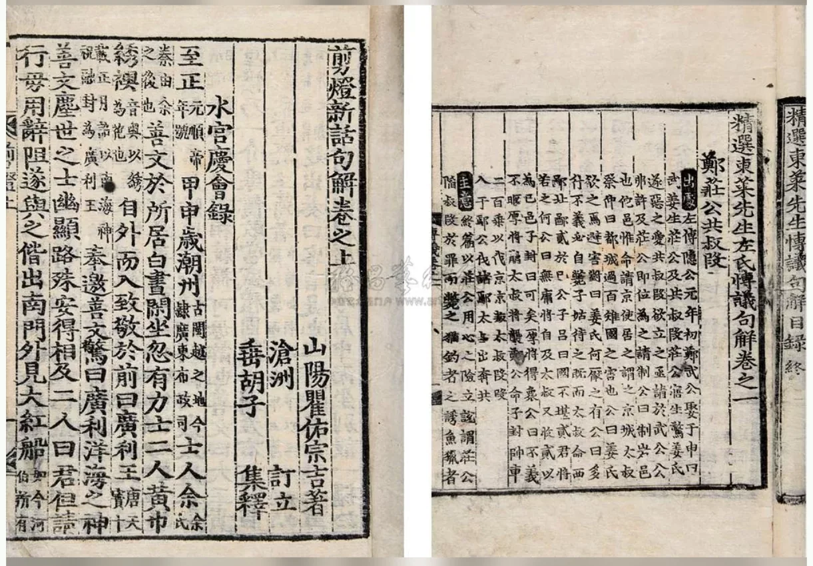

 点击图片可查看大图 · 原始图像 1221×850 px 流拍 朝鲜刻本三种 《精选东莱先生左氏传议句解八卷》、《剪灯新话句解二卷》、《杜律二卷》三种。 —— 成交记录流拍 估价RMB 6,000-8,000 记录信息 拍卖日期2010-06-02 13:30 拍卖公司北京保利 拍卖专场5周年春季拍卖会 中国古籍文献及名家翰墨 创作年代原表未著录 开本尺寸不一 尺寸类型尺寸不一 高 × 宽未著录 纸张原表未著录 成交价原文无成交价（流拍） 来源位置Excel 第 39 行